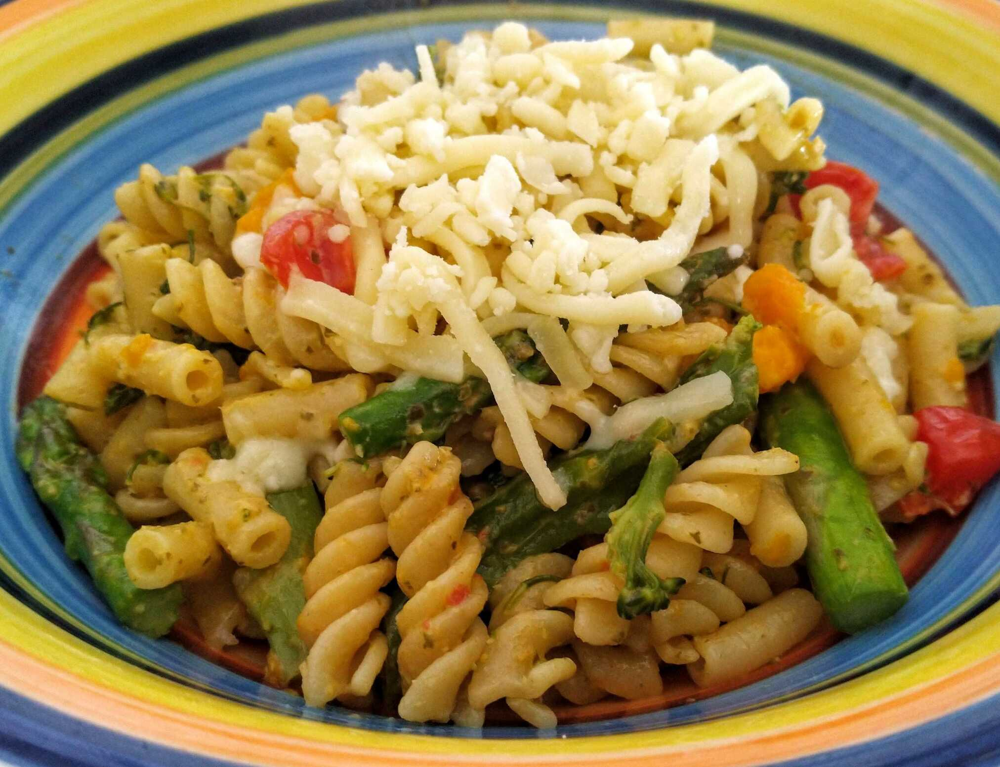

Warm Pasta Salad

- 500g pasta
Cook pasta in microwave
- 2 tbs olive oil
- 3 garlic cloves
Fry garlic in pan for 1 min
- 2 bunches of aparagus
- 2 tbs lemon juice
- 2 tbs basil pesto
Add asparagus and cook until tender Add pesto and lemon juice and heat through Remove from pan
- 400g cherry tomatoes
- 1/4 cup pine nuts
Combine pasta, asparagus, tomatoes and pine nuts in bowl
- 1/2 cup basil leaves
Serve with cheese and fresh basil leaves